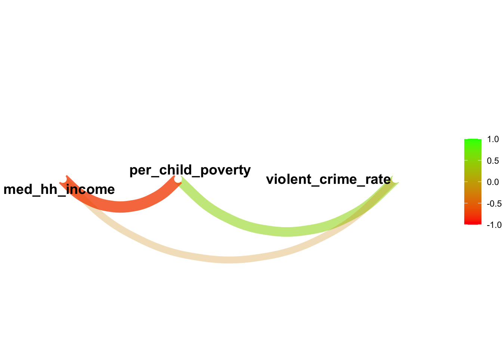

library(usethis) # use_github_file()
library(tidyverse) # read_csv()
library(janitor) # clean_names() 4 Multiple Linear Regression Models
4.1 Required packages
The following CRAN packages must be installed:
| Required CRAN Packages |
|---|
| tidyverse |
| usethis |
| janitor |
| skimr |
| apaTables |
| broom |
| corrr |
| psych |
REMINDER: Never use the command library(psych).
4.2 Page 66 Correlations
4.2.1 Activate packages
4.2.2 Obtain data and save it to your computer
use_github_file(repo_spec = "https://github.com/johnhoffmannVA/LinearRegression/blob/main/StateData2018.csv",
save_as = "statedata2018.csv")4.2.2.1 Load data from your computer
Clean names is essential here. It makes sure all column names are lower case. They are not all lower case in the original data file.
statedata2018 <- read_csv("statedata2018.csv") %>%
clean_names()4.2.3 Inspect data
There are so many column names in this data set that we do the glimpse a bit differently. That is, we sort the order of the columns alphabetically prior to doing the glimpse(). It affects only the display of the column names - not the structure of the data.
statedata2018 %>%
select(sort(names(statedata2018))) %>%
glimpse() Rows: 50
Columns: 77
$ aa_voted_percent <dbl> 49.6, NA, 50.9, 41.6, 49.9, 31.0, 48.3, 55.…
$ alc_disorder_past_year <dbl> 4.51, 6.57, 5.49, 5.38, 5.51, 6.30, 6.10, 6…
$ assault_rate <dbl> 283.4, 440.2, 252.1, 346.0, 236.6, 192.8, 1…
$ assoc_degree <dbl> 8.2, 8.5, 8.4, 6.7, 7.7, 8.6, 7.5, 7.9, 9.7…
$ bach_degree <dbl> 15.4, 19.0, 18.1, 14.2, 20.6, 24.9, 21.9, 1…
$ binge_alc_past_month <dbl> 21.40, 24.20, 23.10, 19.49, 23.52, 26.97, 2…
$ burglary_rate <dbl> 819.0, 427.6, 647.1, 835.7, 522.3, 438.2, 3…
$ census_division <chr> "EastSouthCentral", "Pacific", "Mountain", …
$ census_region <chr> "South", "West", "West", "South", "West", "…
$ comm_supervision_rate <dbl> 1591.14, 1522.95, 1503.95, 2222.08, 1088.59…
$ community_supervision <dbl> 60700, 8400, 84800, 51500, 333300, 90900, 4…
$ conservative <dbl> 26.00835, 19.27924, 20.40239, 25.04501, 17.…
$ cost_living <dbl> 89.3, 129.9, 97.0, 86.9, 151.7, 105.6, 127.…
$ death_row <dbl> 177, 0, 120, 32, 727, 3, 0, 0, 348, 49, 0, …
$ death_row_rate <dbl> 4.33, 0.00, 2.18, 1.33, 3.59, 0.09, 0.00, 0…
$ doctoral_degree <dbl> 1.0, 1.2, 1.2, 0.9, 1.6, 1.6, 1.6, 1.8, 1.1…
$ dom_mig_rate <dbl> 1.17, -14.58, 11.61, 0.82, -3.95, 7.60, -6.…
$ dom_migration <dbl> 5718, -10752, 83240, 2475, -156068, 43293, …
$ fips_code <dbl> 1, 2, 4, 5, 6, 8, 9, 10, 12, 13, 15, 16, 17…
$ gross_state_product <dbl> 211197, 51479, 326446, 122704, 2797601, 345…
$ guns <dbl> 161641, 15824, 179738, 79841, 344622, 92435…
$ guns_per_capita <dbl> 33.15, 21.38, 25.61, 26.57, 8.71, 16.48, 22…
$ health_exp_per_capita <dbl> 7281, 11064, 6452, 7408, 7549, 6804, 9859, …
$ illicit_disorder_past_year <dbl> 2.86, 3.69, 2.79, 2.80, 2.97, 3.43, 3.47, 3…
$ illicit_drugs_past_month <dbl> 8.67, 16.81, 10.77, 10.51, 13.11, 17.83, 12…
$ infant_mortality_rate <dbl> 9.03, 5.17, 5.32, 8.20, 4.22, 4.76, 4.78, 7…
$ intern_mig_rate <dbl> 0.68, 3.26, 2.00, 0.75, 2.98, 1.44, 4.62, 1…
$ intern_migration <dbl> 3344, 2401, 14335, 2260, 117797, 8207, 1649…
$ larceny_rate <dbl> 2149.5, 2096.4, 2289.1, 2313.5, 1527.4, 185…
$ latinx_voted_percent <dbl> 29.1, NA, 48.8, 20.8, 43.3, 43.9, 41.1, NA,…
$ life_expectancy <dbl> 75.0, 77.8, 79.2, 75.5, 81.0, 80.0, 80.7, 7…
$ life_satis <dbl> 51.42162, 52.08266, 51.38469, 52.34836, 51.…
$ masters_degree <dbl> 6.9, 7.6, 7.8, 5.9, 8.4, 10.9, 12.1, 8.9, 7…
$ med_hh_income <dbl> 48486, 76715, 56213, 45726, 71228, 68811, 7…
$ median_age <dbl> 39.0, 33.5, 37.5, 38.0, 36.4, 36.7, 40.9, 4…
$ mental_illness_past_year <dbl> 19.95, 20.32, 18.02, 20.73, 18.18, 19.86, 1…
$ motor_vehicle_theft_rate <dbl> 209.1, 236.0, 261.3, 188.8, 391.3, 234.8, 1…
$ murder_ms_rate <dbl> 5.7, 5.6, 4.7, 5.6, 4.4, 2.8, 2.4, 5.8, 5.8…
$ opioid_od_death_rate <dbl> 9.0, 13.9, 13.5, 6.5, 5.3, 10.0, 27.7, 27.8…
$ pain_pill_past_year <dbl> 4.53, 4.81, 4.27, 5.03, 4.30, 4.87, 4.21, 4…
$ per_age0_18 <dbl> 24, 27, 24, 25, 24, 24, 22, 22, 21, 26, 23,…
$ per_age19_25 <dbl> 9, 9, 9, 9, 9, 9, 8, 8, 8, 9, 7, 9, 9, 9, 9…
$ per_age26_34 <dbl> 12, 13, 12, 12, 14, 14, 11, 12, 12, 12, 12,…
$ per_age35_54 <dbl> 25, 26, 24, 25, 26, 26, 27, 25, 25, 27, 25,…
$ per_age55_64 <dbl> 14, 13, 12, 13, 12, 13, 15, 14, 14, 12, 13,…
$ per_age65plus <dbl> 17, 12, 18, 17, 14, 14, 17, 19, 21, 14, 19,…
$ per_am_ind_alaskan <dbl> 1.0, 16.0, 4.0, 1.0, 1.0, 1.0, 0.5, 0.5, 0.…
$ per_asian <dbl> 1, 6, 3, 2, 15, 3, 5, 4, 3, 4, 38, 2, 6, 2,…
$ per_black <dbl> 26.0, 3.0, 4.0, 15.0, 5.0, 4.0, 10.0, 21.0,…
$ per_cap_income <dbl> 26846, 35874, 29265, 25635, 35021, 36415, 4…
$ per_child_poverty <dbl> 24, 13, 20, 24, 17, 12, 14, 17, 19, 20, 12,…
$ per_latinx <dbl> 4, 7, 32, 8, 39, 22, 17, 9, 26, 10, 10, 13,…
$ per_pop_change2010_18 <dbl> 2.254, 3.828, 12.192, 3.354, 6.181, 13.247,…
$ per_poverty <dbl> 16.89, 11.11, 14.86, 16.40, 13.30, 10.29, 9…
$ per_white <dbl> 66, 60, 54, 72, 37, 68, 66, 62, 53, 52, 21,…
$ percent_uninsured <dbl> 12.0, 14.3, 12.7, 9.8, 8.3, 8.6, 6.2, 6.8, …
$ pop_change2010_18 <dbl> 107733, 27189, 779358, 97797, 2302522, 6662…
$ pop_density <dbl> 95.4, 1.3, 58.3, 56.9, 246.1, 50.8, 742.6, …
$ pop18and_older <dbl> 3814879, 551562, 5638481, 2317649, 30617582…
$ population <dbl> 4887871, 737438, 7171646, 3013825, 39557045…
$ prison_rate <dbl> 1072.12, 797.73, 975.44, 1035.53, 662.04, 7…
$ prisoners <dbl> 40900, 4400, 55000, 24000, 202700, 32100, 1…
$ professional_degree <dbl> 1.5, 1.8, 1.8, 1.3, 2.4, 2.3, 3.0, 1.9, 2.1…
$ prop_crime_rate <dbl> 3177.6, 2760.0, 3197.5, 3338.0, 2441.1, 253…
$ rape_rate <dbl> 41.3, 104.7, 50.2, 59.4, 29.7, 56.7, 21.7, …
$ religious <dbl> 32.03850, 24.12306, 26.40519, 30.05092, 24.…
$ robbery_rate <dbl> 96.9, 85.4, 92.8, 69.1, 125.5, 56.7, 87.8, …
$ state <chr> "Alabama", "Alaska", "Arizona", "Arkansas",…
$ state_taxes_per_capita <dbl> 2262, 2226, 2272, 3266, 4424, 2599, 5341, 4…
$ suic_rate_age_adj <dbl> 16.6, 27.0, 18.2, 20.8, 10.5, 20.3, 10.5, 1…
$ suicide_idea_past_year <dbl> 3.89, 5.34, 4.02, 4.59, 4.04, 5.41, 4.05, 4…
$ suicide_rate <dbl> 15.90, 28.07, 19.37, 21.72, 11.48, 21.59, 1…
$ tobacco_past_month <dbl> 30.12, 26.68, 21.19, 30.69, 16.23, 20.15, 2…
$ total_voted_percent <dbl> 69.0, 67.7, 68.6, 58.5, 61.5, 65.6, 68.0, 6…
$ unemploy_rate <dbl> 4.1, 6.5, 4.7, 3.5, 4.1, 3.1, 4.2, 4.0, 3.5…
$ violent_crime_rate <dbl> 427.4, 635.8, 399.9, 480.1, 396.1, 309.1, 2…
$ white_voted_percent <dbl> 52.6, 60.3, 65.3, 44.0, 61.4, 62.6, 57.7, 5…4.2.4 Select focal variables
focal_data <- statedata2018 %>%
select(violent_crime_rate, per_child_poverty, med_hh_income)4.2.5 Select focal variables
library(corrr)
focal_data %>%
correlate()Correlation computed with
• Method: 'pearson'
• Missing treated using: 'pairwise.complete.obs'# A tibble: 3 × 4
term violent_crime_rate per_child_poverty med_hh_income
<chr> <dbl> <dbl> <dbl>
1 violent_crime_rate NA 0.492 -0.208
2 per_child_poverty 0.492 NA -0.756
3 med_hh_income -0.208 -0.756 NA 4.2.6 Correlation options
4.2.6.1 psych package
focal_data %>%
psych::corr.test()Call:psych::corr.test(x = .)
Correlation matrix
violent_crime_rate per_child_poverty med_hh_income
violent_crime_rate 1.00 0.49 -0.21
per_child_poverty 0.49 1.00 -0.76
med_hh_income -0.21 -0.76 1.00
Sample Size
[1] 50
Probability values (Entries above the diagonal are adjusted for multiple tests.)
violent_crime_rate per_child_poverty med_hh_income
violent_crime_rate 0.00 0 0.15
per_child_poverty 0.00 0 0.00
med_hh_income 0.15 0 0.00
To see confidence intervals of the correlations, print with the short=FALSE option4.2.6.2 apaTables package
library(apaTables)
focal_data %>%
apa.cor.table()
Descriptive Statistics and Correlations
Variable M SD 1 2
1. violent_crime_rate 346.81 128.82
2. per_child_poverty 16.84 4.75 .49**
[.25, .68]
p < .001
3. med_hh_income 60252.12 9879.50 -.21 -.76**
[-.46, .07] [-.85, -.61]
p = .147 p < .001
Note. M and SD are used to represent mean and standard deviation, respectively.
Values in square brackets indicate the 95% confidence interval.
* indicates p < .05. ** indicates p < .01.
4.2.6.3 corrr package
We use correlate() to get the correlations, shave() to remove upper diagonal, and fashion() to make it nice:
library(corrr)
focal_data %>%
correlate() %>%
shave() %>%
fashion() term violent_crime_rate per_child_poverty med_hh_income
1 violent_crime_rate
2 per_child_poverty .49
3 med_hh_income -.21 -.76 But more importantly the corr package has network_plot() to visual relations among variables. Here we only plot relations where the magnitude of the correlation is greater than .20:
focal_data %>%
correlate() %>%
network_plot(min_cor = .2,
colors = c("red", "green"),
legend = "full")
4.3 Page 67
lm4_1 <- lm(violent_crime_rate ~ per_child_poverty + med_hh_income,
data = focal_data)
apa.reg.table(lm4_1)| predictor | b | b_CI | beta | beta_CI | sr2 | sr2_CI | r | summary |
|---|---|---|---|---|---|---|---|---|
| (Intercept) | -310.57 | [-748.95, 127.82] | ||||||
| per_child_poverty | 21.18** | [11.05, 31.31] | 0.78 | [0.41, 1.16] | .26** | [.06, .47] | .49** | |
| med_hh_income | 0.00* | [0.00, 0.01] | 0.38 | [0.01, 0.76] | .06* | [-.05, .18] | -.21 | |
| \(R^2\) = .305** | ||||||||
| 95% CI[.09,.47] | ||||||||
# select(violent_crime_rate, per_child_poverty, med_hh_income)
library(plotly)
Attaching package: 'plotly'The following object is masked from 'package:ggplot2':
last_plotThe following object is masked from 'package:stats':
filterThe following object is masked from 'package:graphics':
layoutplot_ly(focal_data, x = ~per_child_poverty, y = ~med_hh_income, z = ~violent_crime_rate,
type = "scatter3d", mode = "markers")